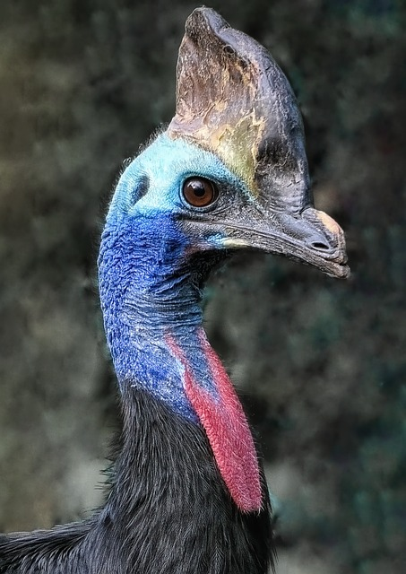
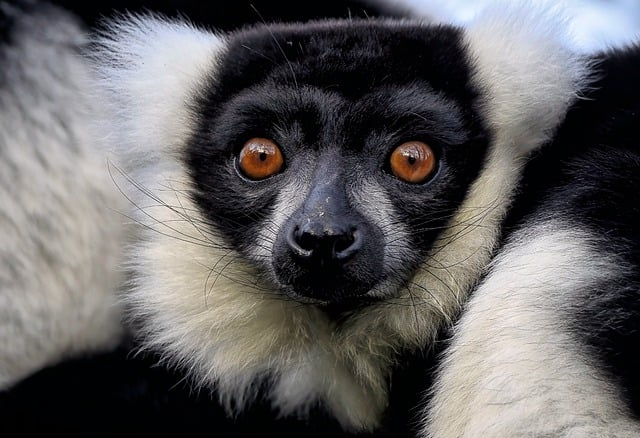

A Harpia é
é tida como a mais forte. Possui bico potente
e suas garras são maiores que as do urso pardo americano,
suas pernas têm a grossura de um punho de um homem adulto.

Casuar
O Casuar é uma ave curiosa que costuma
imitar movimentos de humanos depois de observá-los atentamente,
embora não seja muito amigável ou domesticável.

Lêmure
O Lêmure é encontrado em
áreas costeiras das
regiões leste e sul do continente, habitando Queensland, Nova Gales
do Sul, Vitória e Austrália do Sul.